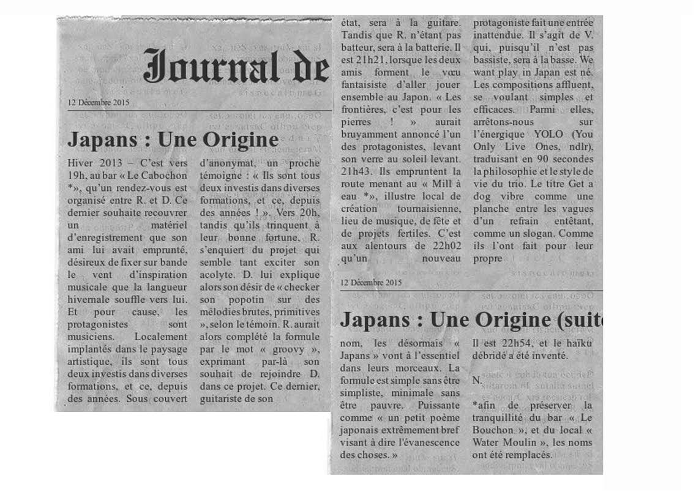

Born in 2013 , Japans is a Rock'n Roll kamikaze trio from Belgium. These three degenerate give you a simplistic Rock to make you swing your ass...
2016/02/13 - 22:00 - Water Moulin - Tournai
2015/12/19 - 22:00 - Merencha's - Tournai
2015/10/31 - 20:00 - Risquons Tout - Mouscron
2015/10/17 - 21:00 - Slide - Tournai
2015/10/15 - 23:00 - Mauvaise Herbe - Tournai
2015/07/18 - 14:00 - Commines
Punk und Broll II
2015/07/11 - L'os a Moelle - Bxl
Fiesta Panik
2015/06/27 - Radio - Bxl
Fête de la musique
2015/06/20 - Masure14 - Tournai
Grosse Soiree d'ouverture
2015/05/22 - Mauvaise Herbe - Tournai
Skate 'n Rock
2015/05/17 - British - Tournai
1er Mai St-Luc
2015/05/01 - Bar archi - Tournai
InsideOut
2015/04/03 - La péniche - Liége
...